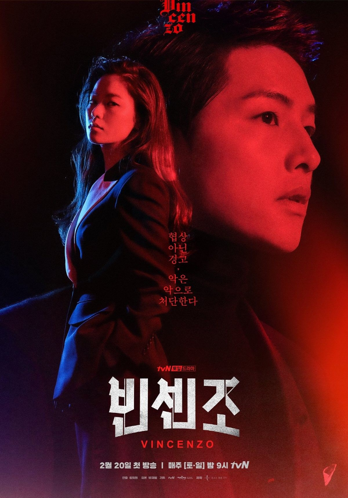

Vicenzo
Vicenzo adalah seri televisi Korea Selatan tahun 2021 yang menampilkan Song Joong-ki, Jeon Yeo-been, Ok Taec-yeon, Kim Yeo-jin, Kwak Dong-yeon, dan Jo Han-cul. Ditayangkan perdana di tvN setiap Sabtu dan Minggu pukul 21:00 (WSK) mulai 20 Februari hingga 2 Mei 2021 dan juga tersedia melalui Netflix.